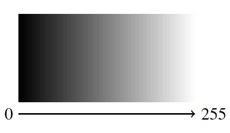

The simplest form of digital colour is the grayscale colour model. In grayscale, vibrant colours that you know and love, like blue, red, yellow and so on, don’t exist. There’s only black and white, and in between them, various shades of gray.
In Processing, and on computers more generally, numbers represent colour. A single whole number in the inclusive range of 0 to 255 represents a grayscale colour. On the scale of 0 to 255, 0 means black, 255 means white, and all the values in between represent increasingly light shades of gray.
